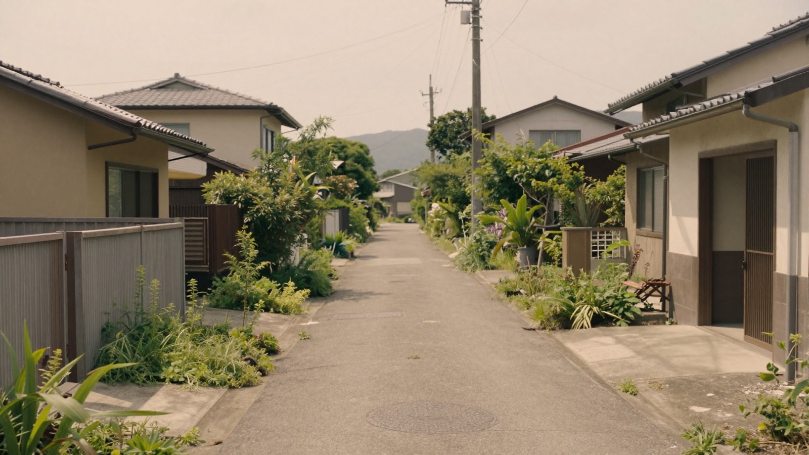

特に、相続人が複数いる場合、意見がまとまらずに不動産の処分が遅れてしまうケースは珍しくありません。しかし、共有不動産だからといって完全に手詰まりになるわけではありません。
ここでは、共有になった不動産の出口として、自分の持分だけを売る方法や、連絡が取れない共有者がいる場合の対処法、そして話し合いが難航したときの選択肢について、やさしく解説します。
共有持分とは
まず、「共有持分」とは何かを理解することが大切です。共有持分とは、一つの不動産を複数の人が共同で所有している場合に、各人が持っている「所有権の割合」のことです。
たとえば、両親の土地と家を相続した兄弟3人が、それぞれ3分の1ずつの割合で所有している場合、この3分の1がそれぞれの共有持分です。不動産の登記簿には、所有者として兄弟3人の名前が記載され、その下に「3分の1」といった割合が記されています。
ここで注意したいのは、共有持分は不動産そのものではなく、「所有権の一部」であるという点です。つまり、物理的に土地や建物を切り分けて手に入れることができるわけではなく、法的な権利としての割合を所有している状態です。この概念が理解できれば、なぜ共有不動産の売却が複雑になるのか、その理由が見えてきます。
自分の持分だけを売ることはできるか
「共有不動産は、全員が同意しなければ売れない」というイメージをお持ちの方も多いかもしれませんが、実際には少し異なります。法律上、共有者一人ひとりが、自分の持っている持分だけを単独で売ることができます。
たとえば、3分の1の持分を持っているあなたが、その3分の1だけを買い手に見つけて譲渡することは、他の兄弟姉妹の同意なしでも可能です。これは、あなたが所有している権利の範囲内で行う行為だからです。
ただし、ここで大きな注意点があります。あなたが自分の持分だけを売った場合、買い手はあなたの代わりに共有者になります。つまり、買い手と残りの兄弟姉妹で、その不動産を共有することになります。
共有物全体を売ったり、賃貸にしたりするなど、不動産そのものの使い方を変えるような重要な決定には、共有者全員の同意が必要です。これは民法251条で定められているルールです。したがって、自分の持分だけを売っても、不動産全体を現金化することはできません。
また、持分だけの売却には現実的なデメリットもあります。買い手は、他の共有者と協力して不動産を管理・処分しなければならず、その煩雑さを嫌うため、買い手が限られてしまう傾向があります。そのため、通常の不動産売買より価格が低くなりやすいという特徴があります。
こうした事情から、共有持分を専門に取り扱っている買取業者が存在します。これらの業者は、買い手を探すのが難しい共有持分を直接買い取ってくれる場合があります。業者に相談・査定を申し込むと、連絡先が業者に渡り、電話やメールで連絡が来ることがありますが、まずは複数の業者に話を聞いてみるのも一つの手です。
共有者の一部と連絡が取れないとき
相続では、海外に住んでいる兄弟や、長年連絡を取り合っていない親族など、所在が分からず連絡が取れない共有者がいるケースも少なくありません。この場合、話し合いで合意を得るのは極めて困難です。

しかし、2023年4月に施行された改正民法により、この問題への解決策が生まれました。民法262条の2および262条の3には、所在等が分からない共有者の持分を、裁判所の決定を経て取得したり譲渡したりできる制度が設けられています。
この制度を利用すれば、連絡が取れない共有者の持分を、他の共有者や第三者が買い取るような形で処理することが可能になります。ただし、これは裁判所を通じて行う手続きであるため、自分たちだけで勝手に決めることはできません。
この制度は、共有関係の解消を円滑にするために設けられたものですが、手続きには時間と費用がかかる可能性があります。また、裁判所が適当と判断した方法で処理されるため、必ずしも自分の希望通りに進むとは限りません。しかし、連絡が取れない相手がいるというだけで、すべての選択肢が閉ざされるわけではないことは知っておくべきです。
話し合いがまとまらないときの選択肢
連絡が取れても、意見が対立して話し合いがまとまらない場合もあります。たとえば、誰かが実家を住み続けたいが、他の兄弟は現金化したいといったケースです。この場合、最終手段として「共有物分割請求」という制度があります。
共有物分割請求とは、裁判所に分割の方法を決めてもらう手続きです。共有物全体を売って代金を分配する「換価分割」、不動産を物理的に分ける「現物分割」、あるいは特定の共有者が他の共有者の持分を金銭で買い取る「代物分割」など、裁判所が状況に応じて適切な方法を決めます。
この手続きは、共有者全員が納得しないまま強制的に進めるものではなく、あくまで裁判所が中立の立場で判断を下すものです。したがって、感情的な対立が激しい場合でも、最終的な判断を第三者に委ねることで、膠着状態を打破できる可能性があります。
ただし、裁判手続きには時間と費用がかかりますし、結果が必ずしも自分の希望通りになるとは限りません。まずは、弁護士や司法書士などの専門家に相談し、自分の状況に合った最適な方法を見つけることが重要です。
共有不動産の売却は、単なる金銭のやり取りではなく、家族間の関係や感情も絡む複雑な問題です。自分の持分だけを売る、連絡が取れない相手がいる場合の制度を利用する、裁判で分割を求める、それぞれの選択肢にはメリットとデメリットがあります。
まずは、不動産の現状と自分の希望を整理し、信頼できる専門家の意見を聞くことから始めましょう。一人で抱え込まず、早めの行動が、将来の後悔を防ぐ鍵となります。
本記事は一般的な制度の説明です。個別の事情は司法書士・弁護士・税理士などの専門家にご確認ください。最終確認日: 2026年10月30日